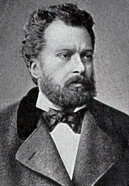

Namýk Kemal

Hürriyet aþýðý, vatanperver, mütedeyyin, çalýþkan, prensiplerinden taviz vermeyen bir fikir ve düþünce adamý olan Namýk Kemal'in hayatý, daha ilk yýllarýndan itibaren il il dolaþmakla baþlayýp sürgünde noktalanýr.Asýl adý Mehmet Kemal olup 1840 yýlýnda Tekirdað'da doðdu. Babasý Müneccimbaþý Mustafa Asým beydir. Ýki yaþýnda annesini kaybedince dedesi onu yanýna alýp büyütmüþtür. Bir memur olan dedesinin sýk sýk görev yerinin deðiþtirilmesi Kemal'in düzenli bir okul hayatý geçirmesine imkan vermedi. Bu durum on yedi yaþýna kadar devam etti. Ancak, çok fazla ve düzenli olmamakla beraber özel ders alýp kendi gayretleriyle eðitimini tamamlamaya çalýþtý.
Sofya'da bulunduðu sýralarda divan þiiriyle ilgilenmeye ve yazmaya baþladý. Divan toplantýlarýna katýlmasý ve þiir yazmasýndan dolayý kendisine; yazýcý, katip anlamýna gelen " Nâmýk" mahlasý, þair Eþref Paþa tarafýndan verildi. Diðer yandan da Fransýzca öðrenmeye çaba gösterdi. 1857'de Ýstanbul'a geldi.1863'de Tercüme Odasýnda göreve baþladý . Þinasi ile tanýþtýktan sonra Tasviri Efkar'da yazýlar yazmaya baþladý.tanzîmat ve sonrasýnýn en önemli teþekküllerinden olan Yeni Osmanlýlar'a katýldý. Mýsýr Hidivi Mustafa Paþanýn daveti üzerine Ziya Paþa ile birlikte Paris'e gitti (1867). Daha sonra bir müddet Londra ve Viyana'da yaþadýktan sonra Ýstanbul'a döndü (1870). Londra'da bulunduðu sýralarda Hürriyet Gazetesini çýkardý.
Vatana döndükten sonra Ýbret gazetesini çýkarmaya baþladý (1872). Kýsa bir süre sonra gazetesi kapatýlýp kendisi de Gelibolu mutasarrýflýðýna atanarak Ýstanbul'dan uzaklaþtýrýldý. Bu görevden alýnýnca Ýstanbul'a dönüp gazetesinin baþýna geçti. Vatan Yahut Silistre adlý oyunu tiyatroda oynanýrken(1873) fazla ilgi görmesinden ve hürriyet, vatan ve Ýttihad-ý Ýslam hakkýndaki yazýlarýndan dolayý Kýbrýs'a sürüldü. Magosa Kalesinde 38 ay hapis yattýktan sonra Ýstanbul'a döndü (1876).
Kanuni Esasi (Anayasa)'nin hazýrlanmasý çalýþmalarýna katýlarak Ziya Paþa ile birlikte çalýþtý ve önemli katkýlarda bulundu. 93 Harbi baþladýktan sonra bir ihbar üzerine tutuklanarak hapse kondu. Kendisine Ýstanbul dýþýnda görev teklifi yapýldýðý halde kabul etmeyip yargýlanmayý tercih etti. Mahkemeden beraat ettiði halde Midilli Adasýna sürüldü (1877). Sonra buraya mutasarrýf olarak tayin edildi. Buradan sýrasýyla Rodos (1884), Sakýz (1887) adalarýna atandý ve Sakýz'da vefat etti (1888). Böylece Namýk Kemal'in hürriyet ve vatan için mücadeleyle geçen 48 yýllýk ömrü; kaçýþ, sürgün, hapis ve yer deðiþtirmelerle nihayet buldu.
Fikri Cephesi
Namýk Kemal'in yaþadýðý dönem birçok fikrin harmanlandýðý ve Batýlýlaþma çabalarýnýn önceki devirlere göre daha yoðun yaþandýðý bir dönemdir. Osmanlýnýn toprak kayýplarýnýn artmasýna paralel olarak dýþ müdahalelerin çoðalmasý Osmanlý idarecilerinin yanýnda aydýnlarý da yaralamýþtýr. Bu konuda fikir üreten ve vatanýn bütünlüðünün korunmasýna katkýda bulunmak için kafa yoranlardan bir tanesi de Namýk Kemal'dir.
Ona göre Vatan; Mukaddes Beldeler de dahil olmak üzere millet, hürriyet, uhuvvet, tasarruf, hakimiyet, ecdada hürmet, aileye muhabbet gibi ulvi duygularýn bir arada toplandýðý mukaddeslerle bezenmiþ tüm Osmanlý topraklarýdýr.
Hürriyet ve vatan aþýký olan Namýk Kemal, ayný zamanda samimi ve mütedeyyin bir Müslüman'dýr. tanzîmat ricalini Milletin Ýslami kimliðinin korunup Avrupa'dan alýnacak fenlerle takviye edilmesi konusunda sýk sýk uyarmýþtýr. O'na göre Avrupa körü körüne taklit edilmemeli, kendi kanun, inanç ve geleneklerimiz terk edilmemeliydi. Osmanlý fikir hayatýnda Hürriyet ve kanuna baðlý demokrasi üzerine açýk bir görüþ getirmeyi baþaran ilk kiþidir.
Namýk Kemal, bir yandan kanunlar önünde tüm vatandaþlara eþit haklar tanýyan Osmanlýcýlýðý, diðer yandan özellikle Batýdan alýnacak maddi kalkýnma vasýtalarýyla bütünleþerek terakki edecek olan Ýslam Ýttihadýný savunmuþtur. O'na göre siyasi ve ekonomik yönden kalkýnmýþ olan Asya ve Afrika kýtalarý batýya alternatif teþkil edecektir. Fakat, bütün bunlarý gerçekleþtirirken milletin iradesinin üstünlüðü esas alýnmalýdýr. Çünki bu sayede saðlanan manevi destek kalkýnmamýza güç katacaktýr. Dahasý, Namýk Kemal iradenin çoðunluk tarafýndan uygulanmasýný da istibdat saymaktadýr.
Namýk Kemal'in bütün görüþlerine esas teþkil eden faktör ise 'Þeriata mutlak baðlýlýk'týr. tanzîmatçýlarý da özellikle bu konudaki sapmalarýndan dolayý eleþtirmiþtir. Adalet, eþitlik ve hürriyet konularý üzerinde önemle duran Namýk Kemal, hukuk konusunda tanzîmatçýlarýn dindevlet ayýrýmý yapmalarýný þiddetle eleþtirmiþ ve bu yüzden dini temelin zedelendiðini ifade etmiþtir. O'na göre yapýlan hukuki reformlar bu zedelenmeyi arttýrmýþtýr.
Geri kalmýþlýðýn ve ilerleyememenin sebepleri arasýnda, Avrupa'nýn ekonomik ve siyasi nüfuzu karþýsýndaki yanlýþ tutumlarý sayar. Ona göre Osmanlý devleti ebedmüddettir. Bu itibarla Ýbn Haldun'un, devletleri; doðan geliþen ve sonunda ölen canlýya benzeten tezine karþý çýkar ve kabul etmez. Çünkü Osmanlý Devletinin bir gün çökeceðine kesinlikle ihtimal vermez.
Eserleri
Þair kimliðiyle tanýnmakla beraber gazeteci kimliði ve fikri cephesi ön plandadýr. Ölümünden sonra þiirleri bir kitapta toplanmýþtýr.Vatan yahut Silistre, Zavallý Çocuk, Akif Bey, Gülnihal, Celaleddin Harzemþah ve Kara Bela adlý tiyatro oyunlarýný yazmýþtýr. Ýntibah ve Cezmi adlý iki de romaný mevcuttur. Osmanlý tarihini yazma çalýþmalarýnýn yanýnda Fatih, Yavuz ve Selahaddini Eyyubi gibi ünlü simalarý iþleyen Evraký Periþan, Kanije Savunmasý gibi tarihi eserler de vermiþtir.
"Kemal'in Rüyasý"
Bediüzzaman Hazretleriyle Namýk Kemal'in ortak özelliklerinin baþýnda hürriyet aþký gelir. Bediüzzaman, 'Münazarat' adýný verdiði ve Hürriyet, Meþveret, Anayasa, kalkýnma gibi konularý sual-cevap þeklinde iþlediði kitabýnda, "II. Meþrutiyetten onaltý sene evvel Kemal'in "Rüyasý"yla uyandýðýný" yazar. Orada bahsi geçen Kemal, Namýk Kemal'dir. O zamanýn þartlarýnda siyasi görüþlerin rüya þeklinde sembolik ifadelerle anlatýlmasý bir gelenek halini almýþ ve bu sayede sansürden kurtulmanýn bir yolu da bulunmuþtu. Eserde bahsi geçen 'Rüya' ise Namýk Kemal'in hürriyet, demokrasi, vatan, milliyet ve kalkýnma gibi kavramlar çerçevesinde siyasi görüþlerini kamuoyuna sembollerle sunmaya çalýþtýðý 'Rüya' adlý makalesidir. Namýk Kemal güya bu rüyayý 1289 yýlý Sefer ayýnýn 14.gecesi (24 Nisan 1872) görmüþtür. Orijinal nüshasýnýn ilk defa hangi tarihte ve nerede yayýnlandýðý bilinmemekle birlikte bu Rüya 1908'de Mýsýr'da Ýçtihad Matbaasýnda bir risale þeklinde basýlarak yayýnlanmýþtýr.
'Rüya'dan bir özet ve kýsa bazý parçalar (bütünü 40 sahifedir):
Namýk Kemal bir akþam üstü Boðaziçinde denize nazýr bir köþke gider. Garibane pencerenin köþesine oturarak denizi seyre dalar. Yavaþ yavaþ güneþ batar, etraf kararýr. Düþüncelerin yoðunluðu, fýrtýnanýn kopmasýyla baþlayan yorgunluk sonucu uykuya dalar. Rüyasýnda kendini bir sahrada bulur. Güneþ doðmak üzeredir. O sýrada bir bulut belirir ve bir kýz içinden doðrulur. Kýz hiddetle ufukta görünen daðdan aþaðý iner ve vatan evlatlarýnýn yaklaþýk yarýsýnýn toplandýðý topluluðun yanýna gelir. Bu kýz onun meftun olduðu hürriyetin semavi timsalidir. Hürriyet yüksek bir kayanýn üstüne çýktýktan sonra nutka baþlar:
Ey sefalete düþmüþ insanlar gözlerinizi mahþer sabahýnda mý açacaksýnýz?..Çektiðiniz hakaret yüküne kiyamet günü terazide aðýrlýðýný göstermek için mi tahammül edersiniz? Heyhat!..Sani-i kudret rahmetini temaþa için nazar vermiþ. Siz o hakikat maþrýkýný setr ediyorsunuz da hayalinizle veya kulaðýnýzla görmeðe çalýþýyorsunuz, gözünüz açýk iken kör oluyorsunuz...ölü haline gelmiþsiniz...fikirlerinizi uyandýrmak için sarfettiðiniz fedakarlýk çarþaflarýnýzý yýkamak için sarf ettiðiniz paraya tekabül etmez...Vücudunuzu rahat döþeðinden uzak tutmayýnýz...uyuyunuz, uyuyunuz!..
Azizi Zülcelal sizleri dünyevi ve uhrevi saadete mazhar olacak þekilde yaratmýþ, siz karnýnýzý doyurmak için evladýnýzý aç býrakmaya tevekkül adýný veriyorsunuz; çalýþanlar Ýlahi sevgiye mazhar iken az bir gýda ile geçinmeyi kanaat zannediyorsunuz; Ýnsan için her þeyin çalýþma ile hasýl olduðu açýk iken çalýþmadan el çekmeyi dini ve dünyevi maksat biliyorsunuz. Sürününüz, çok sürmez süründüðünüz yerde toprak olursunuz!
..................
Bu ne haldir ki hanginizle konuþulsa halinizden þikayet ediyorsunuz. Ama yine hiç biriniz halinizi muhafazadan baþka bir þey düþünmezsiniz!
Hürriyet bu ikazlardan sonra çalýþkan ve meslek sahibi vatan evlatlarýna seslenerek þimdiki çalýþmalarýnýn gelecekteki neticelerini göstermek istediðini söyler. Kalabalýðýn gözleri önünde bir hayal belirmeye baþlar:
Þehirler ve yollar aydýnlýktýr. Köyler, saraylar kadar süslü, kaleler kadar saðlam evlerden meydana gelmiþtir. Demiryollarý ve caddeler çoðalmýþtýr. Halkýn refah düzeyi çok yüksek olup huzur içinde yaþamaktadýr. Milletvekilleri vardýr. Mahkemeler adaletle hükmediyor. Herkes her gün yeni bir fikir icat etmektedir. Her isteyen evinde telgraf bulundurabiliyor...
Namýk Kemal, bu rüyadan büyük bir lezzet alarak uyanýr. O derece hoþuna gitmiþtir ki, rüyayý görebilmek gayesiyle tekrar uyumaya çalýþýr ama, bir daha göremez.